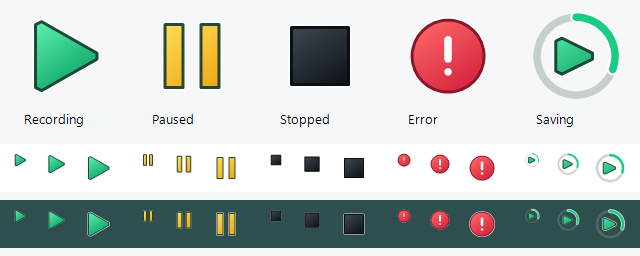

SoundLeaf
Reines C#-Lernprojekt zu Windows-Systemaudio, Hintergrundverarbeitung und sicherer Dateispeicherung.
Vorprüfung und WAV-Modus
Die automatische Aufnahme beginnt erst nach Hintergrundprüfungen von Schreiben, Datenträger-Flush, Umbenennen, freiem Speicher und kurzem Kodieren des gewählten Profils/Dekodieren. Jeder FFmpeg-Prozess ist auf drei Sekunden begrenzt; das Menü bleibt bedienbar. Unter 256 MiB wird gesperrt; zwischen 256 MiB und 1 GiB oder bei unbekanntem Speicher wird gewarnt. Unbekannter Speicher erfordert eine erfolgreiche Ordnerprüfung. Kein garantierter Platz für die ganze Aufnahme.
Bei einem Fehler des gewählten Profils wird der Grund und der ausdrückliche WAV-Befehl „Начать запись только в WAV“ angezeigt. Kein automatischer Wechsel. WAV-Modus startet keinen Encoder. Nach dem Stoppen: alle geprüften WAV-Pfade, keine MKV erstellt und ein Ordnerbefehl. Lange Aufnahmen bleiben Teile bis 256 MiB. Atomare Abschlussvermerke in State/Sessions unterscheiden fertige WAV-Sitzungen von Abstürzen. Vermerkfehler behalten Audio und melden einen Fehler. State mit den Aufnahmen verschieben.
Festes grünes Dreieck mittig im dickeren drehenden Bogen: 24 Bilder, jeweils 80 ms.
Windows 11 · x64. Keine professionelle Aufnahmelösung. Noch kein öffentliches fertiges Binärpaket. Oberfläche: Deutsch / Русский / English.
Start
EXE mit den README-Befehlen bauen. Kompatibles FFmpeg als tools/ffmpeg.exe neben die EXE legen. Einen beschreibbaren Ordner verwenden und den geprüften Kandidaten für den Alltag SoundLeaf.exe nennen.
Beim Start beginnt die Aufnahme automatisch. Nur erlaubte Inhalte mit erforderlicher Zustimmung aufnehmen. Quelle ist das standardmäßige Windows-Ausgabegerät, nicht das Mikrofon.
Bedienung im Infobereich

Linksklick öffnet das Panel, Rechtsklick das Ersatzmenü. Escape oder ein Außenklick blendet das Panel aus, ohne die Aufnahme zu stoppen. Pausenzeit wird ausgeschlossen. Stoppen und Speichern lässt SoundLeaf im Infobereich; Beenden wartet auf das Speichern.
Grünes Dreieck: Aufnahme. Gelbe Balken: Pause. Drehender Ring: Verarbeitung. Schwarzes Quadrat: gestoppt. Rot: Fehler oder frühere offene Sitzungen im gestoppten Zustand.
Verarbeitungsschritte erscheinen im Menü und Tooltip. Erfolg bezieht sich auf eine geprüfte MKV oder ausdrücklich abgeschlossene WAV-Teile, nicht auf alle früheren Aufnahmen. Der Ergebnisbefehl öffnet die letzte geprüfte Datei oder den WAV-Ordner.
Wiederherstellung
Aktuelle Aufnahme stoppen und die Wiederherstellung offener Sitzungen wählen. WAV-Teile werden geprüft, kodiert und zusammengeführt. Originale werden erst nach vollständiger Ergebnisprüfung nach Backups/RecoveredSessions verschoben und nicht gelöscht.
Fehlende/doppelte Teile, aktive Schreiber, unterschiedliche Formate und vorhandene Ziele werden abgelehnt. Bei Fehlern bleiben Originale erhalten; Arbeitsdateien können verbleiben. Eine neue erfolgreiche Aufnahme repariert keine frühere fehlgeschlagene Sitzung.
Speicherung und Grenzen
Recordings und logs liegen neben der EXE. Den ganzen Ordner verschieben und Autostart danach neu aktivieren. Stille ist normal. Bei Gerätewechsel eine neue Sitzung starten.
Nur lokal auf einem Rechner geprüft. Keine absolute Absicherung bei Datenträger-/Stromausfall. Dauerbetrieb und Neuinstallation auf einem sauberen Rechner sind noch nicht geprüft. Private Audiodaten und Pfade vor dem Teilen prüfen.
Profile, Einstellungen und Aufnahmen
Standard: MKV / AAC 192 kbit/s mit ursprünglichen Kanälen und Abtastrate. Im gestoppten Zustand ein Format und Bitrate wählen: OGG/Opus startet mit 24 kbit/s, mono, 48 kHz, Sprach-VBR; MP3 nutzt CBR; M4A/AAC und AAC/ADTS nutzen AAC-LC. Weitere MP3/AAC: 48 kHz, bis zwei Kanäle. WAV sichert Original-PCM. Opus: 16/24/32/48/64/96/128; AAC/MP3: 64/96/128/160/192/256/320. VBR ist eine Zielbitrate, keine feste Dateigröße.
Linksklick öffnet Steuerung / Aufnahmen / Einstellungen, Rechtsklick das Ersatzmenü. Escape und Außenklicks blenden das Panel aus, ohne zu stoppen. Deutsch / Русский / English und helles/dunkles/Windows-Design wechseln sofort.
Speicherordner in Einstellungen wählen; alte Dateien werden nicht verschoben, frühere Ordner bleiben in der Liste. Eigene Ziele halten State/Sessions neben datierten Aufnahmen: Metadaten mitnehmen. Die Bibliothek lädt im Hintergrund, erfindet keine unbekannte Dauer und schließt temporäre Dateien aus.
„In anderem Format speichern“ erstellt eine separate vollständig geprüfte Datei mit gewählter Bitrate und Ziel; Original bleibt erhalten. Erneutes Kodieren verbessert die Qualität nicht. Bestehende Ziele und falsche Dateiendungen werden abgelehnt. Wiederherstellung nutzt das Sitzungsprofil oder MKV/AAC 192 für alte Sitzungen. Zusatzformate kodieren kontinuierlich über WAV-Grenzen; Fehler führen zur PCM-Neuerstellung. WAV wird erst nach erfolgreicher Veröffentlichung entfernt.
Panel 3.0.3
Das Panel wächst in 280 ms und schließt sich in 220 ms vom echten Tray-Symbol aus und bleibt innerhalb der Monitor-Arbeitsfläche. Ohne Windows-Animationen erscheint es sofort. DPI wird pro Monitor berücksichtigt. Erneuter Klick, Escape und Fokusverlust verbergen nur das Panel.
Keine Seiten-Scrollleisten. Auf kurzen Bildschirmen gliedern sich Einstellungen in Audio / Dateien / Design; vollständiger Ordnerpfad und Audioinformationen stehen im Tooltip. Aufnahmen werden seitenweise angezeigt. Formatnamen: mkv / aac, ogg / opus, mp3, m4a / aac, aac / adts. Auswahlfelder unterstützen Tab, Pfeile, Enter, Leertaste und Escape. Escape schließt erst die Liste, dann das Panel. Audioverarbeitung und Dateischutz bleiben unverändert.
Audiopegel und aktuelle Sitzung
Über den Symboltasten steht eine dünne ungefüllte Kontur des echten PCM-Pegels mit 95% visueller Ausprägung; das Audio bleibt unverändert. 50-ms-Aktualisierungen und schnelles Abklingen verkleinern nach einem Wort die ganze Kontur, ohne alte Spitzen festzuhalten. Stille und Pause zeigen eine ruhende Linie; nach 150 ms ohne Pakete verfällt der Pegel. Die Kontur ist eine Pegelhüllkurve, kein Audiosignal oder Spektrum. „Ton erkannt“ bestätigt bereits empfangenen Ton der Sitzung und bleibt während Pausen erhalten. Geräteverfügbarkeit ist ein separates Merkmal und beweist nicht, dass eine bestimmte gewünschte Anwendung hörbar ist.
Die erste Aufnahmenseite enthält die laufende, unfertige Sitzung mit Dauer, PCM-Größe, Zustand und fünf deutlich getrennten aktuellen Pegelbalken. Sie lässt sich nicht als fertiges Ergebnis öffnen oder konvertieren. EXE und Windows-Mitteilungen teilen ein Blatt; Tray-Zustandssymbole bleiben erhalten.